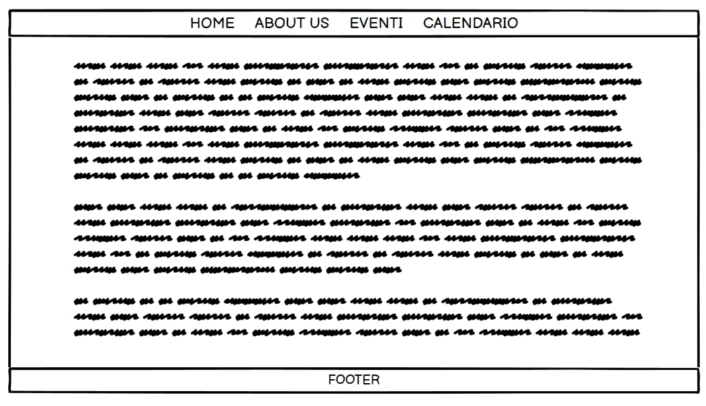

Documentazione
Abstract
Il sito nasce per riunire le persone di uno stesso fandom, farli passare un pomeriggio di musica e divertimento in cui possono conoscersi e fare amicizia. È pensato per i fan di artisti che appartengono al genere alternative, non importa l’età. Il target primario sono i fan che andranno al concerto di un artista da soli, ma che vorrebbero compagnia. Organizzando i raduni poco prima dei concerti, queste persone hanno modo di trovare qualcuno con cui vedersi al concerto poco tempo dopo.
Project management plan
benchmarking
Obiettivi: far incontrare persone che seguono lo stesso artista musicale e che andranno a breve a vederlo in concerto. Permettere a chi andrà al concerto da solo, di trovare compagnia, ma soprattutto di fare amicizia con persone con cui condivide la passione per un determinato artista.
Target utente: i fan di musica alternative che fanno parte di fandom di diversi artisti musicali del genere. Non c’è un’età specifica, anche se solitamente le pratiche di fandom sono maggiormente seguite da persone in fase adolescenziale/giovani adulti, che sicuramente sono più propensi a partecipare ai raduni organizzati.
Competitors: Teamworld e Fandom. Nonostante offrano servizi un po’ diversi dal sito realizzato, si tratta di due communities online che si rivolgono ai fandom, non solo di artisti musicali, hanno target molto più ampi. Si occupano di dare notizie, curiosità, informare sui mondi immaginari dei prodotti mediatici. Teamworld in particolare, organizza anche eventi per i fan dai summer camp, ai meet&greet con gli artisti a cui si può accedere tramite dei concorsi.
struttura e layout
architettura del sito
wireframes
HOME
ABOUT US
EVENTI
CALENDARIO
Look and feel
Font: il nome del sito e alcuni titoli sono in ‘Permanent Marker’ utilizzato perché richiama uno stile rock, indelebile e quindi coerente con lo stile del sito e uno dei generi verso cui questo si orienta maggiormente. I paragrafi sono realizzati in ‘Nunito’
Palette: la combo di colori rosa (#f320b3) e nero domina in tutte le pagine del sito, sostituita solo occasionalmente da rosa + bianco per le scritte. La scelta è stata fatta perché questa combo è molto utilizzata da diversi artisti della scena punk-rock contemporanea, come Machine Gun Kelly, Yungblud e tanti altri, che rompono gli stereotipi di genere indossando spesso un colore ritenuto da certi canoni, femminile.
linguaggi e strumenti
Linguaggi web: HTML, CSS, Javascript
Strumenti per la progettazione: Il sito è stato realizzato da zero con Visual Studio code come text editor. Come supporto sono stati utilizzati W3 school per apprendere ad utilizzare HTML e per elementi di responsivness, Bootstrap per il menù in alto, Fontawesome per le icone, Google Font per i fonts, Pinterest e Google immagini per le immagini e Google Calendar per la realizzazione e pubblicazione del calendario. I wireframes della documentazione sono stati realizzati con Balsamiq. Infine, il sito è stato promosso sui social attraverso Instagram, per monitorare il sito è stato utilizzato Google analytics, mentre per la pubblicazione Github.
Communication strategy
backround
Diversamente dai suoi competitors, FAN MEETING nasce con l’obbiettivo di far incontrare solamente i fan e si concentra sul rapporto che può nascere tra questi. Chiunque può partecipare ai raduni organizzati, non ci sono concorsi da vincere, si è tutti alla pari. La cosa più importante è radunare persone con una passione comune e lasciare che la loro creatività e voglia di stare insieme guidino il raduno. Non offre la possibilità di organizzare dei veri e propri meet & greet con gli artisti, perché si tratta di un sito che nasce dal basso, questa che può essere vista come una mancanza, è il vero valore aggiunto: è un sito creato dai fan per i fan.
obbiettivi comunicativi
Il sito offre degli incontri già organizzati in una data e luogo precisi per dar modo ai fan di incontrarsi. Inoltre, mette a disposizione una pagina con un calendario che mostra tutti i concerti in programma e un link alla pagina di Ticket master per acquistare i biglietti. C’è anche la possibilità di scrivere alla pagina Instagram del sito per chieder di organizzare un incontro per un artista specifico.
obbiettivi comunicativi prefissati:
50 visite al sito
20 followers sulla pagina Instagram e 10 like al post di presentazione del sito
Una richiesta di organizzazione di un incontro
target audience e messaggio
Il sito si rivolge agli amanti della musica rock, punk, alternative, che amano condividere la loro passione e andare ai concerti con qualcuno che sia fan tanto quanto loro. Per raggiungere queste persone, oltre che ai canali social del sito, si utilizzano pagine Instagram dedicate ad artisti del genere molto seguite dai loro fandom, a cui è chiesto di fare pubblicità. Non c’è un’età specifica presa in considerazione, ma solitamente le pratiche di fandom sono seguite da giovani tra i 14 e i 25 anni. Il genere preso in considerazione però, è amato soprattutto da persone un po’ più adulte, quindi la fascia d’età si può estendere fino ai 30 anni.
Il messaggio principale che il sito vuole trasmettere è che ci sarà sempre qualcuno con cui condividere le nostre passioni, che anche i generi meno commerciali e ritenuti “superati” hanno delle fanbase molto forti e numerose.
promozione
Per promuovere il sito è utilizzato Instagram: sia dalla pagina del sito stesso, sia attraverso pagine di artisti alternative famosi seguite da numerosi fan, che fanno pubblicità al sito. Essendo un sito che nasce dal basso, anche il passaparola tra i fan è un modo per promuoverlo. Anche i concerti sono un altro modo per promuoverlo organizzando dei piccoli stand al di fuori delle venues in cui distribuire dei volantini di presentazione.